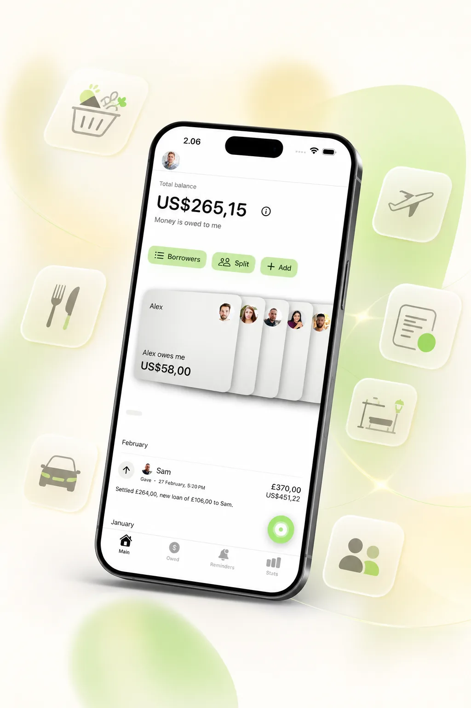
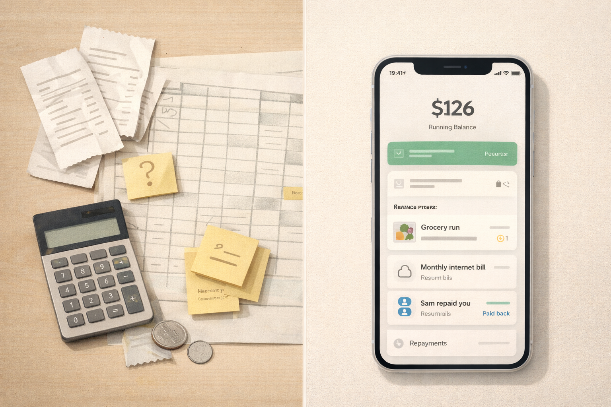

Shared Expense Tracker
Shared Expense Tracker That Shows Who Owes Whom
Shared expenses stop feeling simple as soon as they become ongoing. One person pays for groceries, someone else covers dinner, a subscription renews, a utility bill shows up, and now nobody is fully sure what the current balance is.
YouOweMe helps friends, couples, roommates, and families track shared expenses with a clear running balance, fair bill splitting, reminders, recurring entries, and repayment history that stays visible over time.
When shared expenses turn into silence or uncertainty, read when to ask for money back or send a repayment update.
Instead of constantly recalculating every purchase, you keep one shared picture of what happened and who owes whom now.
If you only need to divide one bill, start with the free Split Expense Calculator. If shared expenses keep happening over time, You Owe Me helps you keep the running balance, repayments, and history clear.
Works offline • No mandatory sign-up • Face ID / Touch ID lock

If you are looking for an app to track shared expenses
Some people search for a shared expense tracker. Others search for a shared expense app, an app to split bills, or an app to track who owes whom. The core job is the same: keep shared costs visible without redoing the math every time.
YouOweMe is built for ongoing shared balances, not just one-off split calculations. It works when expenses keep happening over time and the real need is a running balance, clear repayment history, recurring entries, and calmer follow-ups when needed.
For a quick one-time split, the calculator can be enough. For repeated shared costs, recurring bills, partial repayments, and follow-ups, an ongoing shared expense tracker is usually easier to trust.
Who this is for
A shared expense tracker is most useful when money moves between the same people over time. That usually looks like one of these situations.
Friends and everyday shared spending
For regular back-and-forth costs like groceries, dinner, rides, tickets, and small purchases that add up faster than people expect.
Good fit for: casual shared spending, trips, frequent reimbursements, and uneven everyday costs.
Roommates
For shared rent extras, utilities, groceries, household items, and recurring home costs that should stay visible without constant settling up. If you share rent, utilities, groceries, and household costs with people you live with, see the dedicated roommate expense tracker.
Good fit for: rent-related costs, utility bills, household supplies, and recurring shared purchases.
Couples
For partners who want shared spending to stay clear without turning daily life into scorekeeping, silent resentment, or repeated money conversations.
Good fit for: groceries, travel, subscriptions, uneven purchases, and periodic settle-ups.
Families
For reimbursements, subscriptions, household bills, and purchases handled on someone else’s behalf, especially when the balance stays ongoing. For parent-related bills and family-specific reimbursements, see the family reimbursement tracker.
Good fit for: parents, adult children, shared bills, and recurring family-related charges.
What usually breaks
Most shared expense tension is not really about arithmetic. It comes from unclear systems, delayed tracking, and the fatigue of settling every small thing in real time.
Constant micro-settling
You split every meal, every ride, and every small purchase, and daily life starts feeling more transactional than it needs to.
Memory replaces records
People remember differently, round numbers in their heads, and small purchases are usually the first things to disappear.
The spreadsheet goes stale
One person updates it, the other forgets, and opening a file on mobile feels heavier than the situation deserves.
Recurring costs fade into the background
Subscriptions, utilities, household costs, and repeating charges quietly distort the balance over time when nobody tracks them consistently.
Nobody wants to be the one who brings it up
When the system is unclear, even a simple follow-up starts to feel more awkward than it should.
How YouOweMe keeps shared expenses clear
The goal is not to turn shared spending into accounting. The goal is to keep a clear running balance with as little friction as possible.
Log shared expenses as they happen
Add groceries, subscriptions, bills, household purchases, travel costs, and one-off expenses without relying on memory later.
Keep one visible running balance
Instead of reconstructing the past every time, the current balance stays visible so you can see who owes whom right now.
Split bills fairly
Handle equal splits or custom splits while keeping balances consistent automatically.
Track partial repayments
When someone pays back part of the balance, the history stays clear instead of getting lost in chat messages or mental notes.
Repeat recurring costs
Recurring entries and reminders help with utilities, subscriptions, rent extras, and any shared cost that keeps coming back.
Make follow-ups calmer when needed
If shared spending turns into money owed, Money Conversations can help with clearer follow-up or repayment-update messages based on real numbers. When a shared expense has already turned into a balance someone needs to repay, the repayment reminder text examples can help with the wording.
What people actually track
A shared expense tracker matters most when the same relationship keeps generating small and medium-sized costs over time.
Everyday shared spending
- Meals
- Groceries
- Taxis
- Small purchases
Household and recurring costs
- Rent extras
- Utilities
- Subscriptions
- Internet
Trips and group plans
- Flights
- Hotels
- Tickets
- Shared activities
Repayments and balance clarity
- Partial repayments
- Who paid last
- Current balance
- Family purchases made on someone else’s behalf
Why it works better than spreadsheets
Spreadsheets can look organized, but ongoing shared expenses usually break them in real life. The better system is the one people actually keep using.
When the system is a spreadsheet
- Someone still has to remember to update it
- Small expenses are easy to skip
- Recurring costs still need manual handling
- Mobile use feels heavier than the situation deserves
- The current balance is only as trustworthy as the last update
When the system is built for shared expenses
- Expenses and repayments live in one running history
- The balance updates as soon as something is logged
- Split bills, recurring entries, and reminders are part of the flow
- It is easier to keep using in real daily life
- Clarity stays visible before tension builds

The better system is not the one with the most columns. It is the one people actually keep using.
What this looks like in real life
People already use YouOweMe for situations like these.
Couples balance groceries, flights, hotels, and larger costs.
Families track subscriptions, utilities, and online purchases for elderly parents.
Roommates let household costs roll into a monthly balance.
Friends share meals, tickets, transport, and trip costs without recalculating.
Why people keep using it
The value of a shared expense tracker is not just whether it sounds organized. It is whether people keep using it once real life gets messy. These are the kinds of situations people already use YouOweMe for.
Recurring bills and family spending
“It has been incredibly helpful for managing money exchanged between me and my elderly parents... The recurring charge feature is especially useful for monthly bills.”
Everyday balances without awkward follow-ups
“I finally have an easy way to track money I’ve loaned or am owed... No more awkward ‘you still owe me’ talks.”
Multiple shared-money relationships
“It is invaluable at keeping me on track with purchases made on behalf of multiple family members... so easy to use and allows all of us to see where we are at any point in time.”
Short excerpts from reviews already featured on the site.
Frequently asked questions
What is a shared expense tracker?
A shared expense tracker records who paid, what it was for, any repayments, and the current running balance between people. The goal is clarity without constant manual recalculation.
Is YouOweMe good for roommates?
Yes. It works well for utilities, household items, groceries, rent-related extras, and recurring shared costs. A running balance is often easier than trying to settle after every small purchase.
Is YouOweMe a shared expense app or just a split calculator?
It is a shared expense app for ongoing balances, not just a one-off split calculator. For a single bill, you can use the free Split Expense Calculator. You Owe Me works best when people keep sharing costs over time and need a running balance, repayment history, recurring entries, and clearer follow-ups.
Can couples use it without settling every transaction immediately?
Yes. Many couples prefer periodic reconciliation instead of constant micro-transfers. You can keep the balance visible and settle when it makes sense.
Can I track recurring bills and subscriptions?
Yes. Recurring entries and reminders are useful for utilities, streaming services, rent extras, and any repeating shared charge.
Is this better than a spreadsheet for ongoing shared expenses?
Usually, yes. Spreadsheets often become stale, feel heavy on mobile, and depend on manual upkeep. A lighter system is easier to keep consistent over time.
Can it help with awkward repayment follow-ups?
Yes. If shared spending turns into money owed, YouOweMe can help keep the amount clear and support calmer follow-up or repayment-update messages through Money Conversations.
Related solutions and guides
If your situation is more specific, these are the best next places to go.
Keep shared expenses clear before they turn into friction
If shared spending happens regularly in your life, you do not need a heavier system. You need a clearer one. YouOweMe helps you log expenses, keep a running balance, split bills fairly, track repayments, and reduce the uncertainty that makes shared money tiring.
Built for friends, couples, roommates, families, recurring costs, and everyday shared balances.
Updated